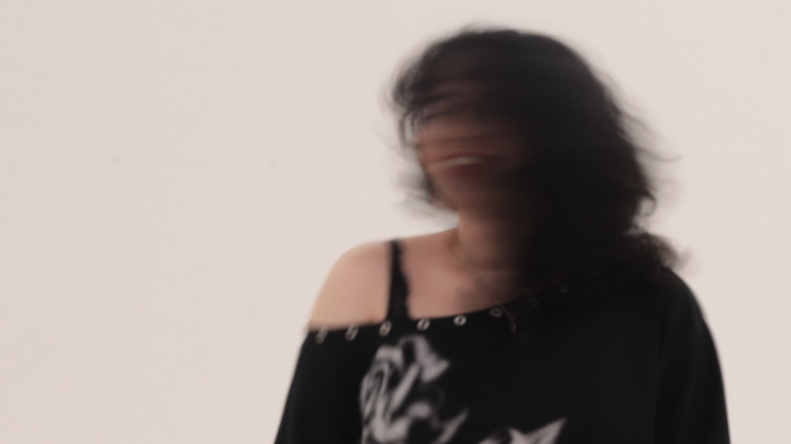

oii, sou maju
movida pela imensa diversidade de criações, pelas conexões inesperadas e pela inquietude de explorar novos caminhos.
quem sou
Designer em formação, observadora, questionadora e um pouco caótica no melhor sentido: estou sempre colecionando referências, descobrindo novas linguagens e conectando coisas no meu diário de coleções.
o que construo
Atualmente, faço estágio na 30e, produtora de eventos e shows, criando peças gráficas para os eventos e conteúdos para as redes sociais. E foi nessa trajetória que descobri que criar não é um processo individual; é na troca de ideias que ganhamos novas possibilidades e entramos em uníssono.
para onde caminho
Explorando o design em suas diversas linguagens, com projetos que se conectem à cultura e à arte. Mais do que seguir um único caminho, quero construir uma trajetória aberta à experimentação e à colaboração, repertórios e ideias que me desafiem a criar de outras maneiras.
formação
Escola Superior de Propaganda e Marketing (ESPM)
Estudante do 6º semestre da graduação de Design
Vamos criarjuntos!
Estou animada para começar a materializar as suas ideias! Preencha o formulário ao lado para entrarmos em contato ;)